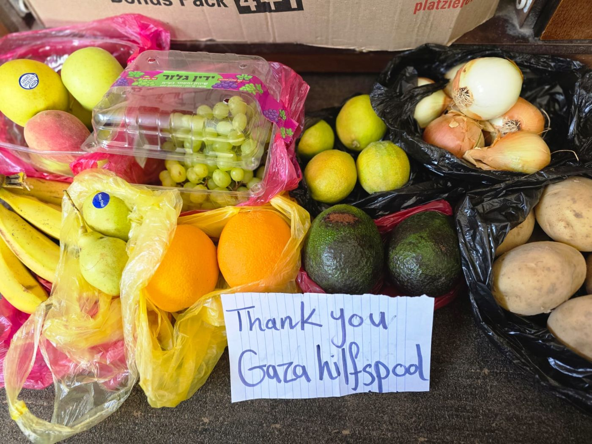

Gazahilfspool
Zwölf Familien, die nicht jeden Monat neu hoffen müssen, dass jemand an sie denkt. Ein Teil der Initiative Hope4Humanity – begleitet und unterstützt von Dar Al-Rahma.
Pate werden Einblicke ansehenHilfe, die bleibt
Katrin, Pflegefachkraft, begleitet mit dem Gazahilfspool – einem Teil von Hope4Humanity – Familien in Gaza – mit Lebensmitteln, Medikamenten und dem, was gerade zum Überleben fehlt. Monat für Monat.
Angefangen hat es mit einer einzigen Familie. Heute sind es zwölf – und das Ziel ist, dass es mehr werden, vor allem Familien mit Kindern.
Niemand muss das allein tragen: Zwei, drei, vier oder mehr Menschen können sich eine Patenschaft teilen.
Aus schwebenden Spenden: Babymilch für schwerstkranke Babys und Kleinkinder im Al-Rantisi-Kinderkrankenhaus in Gaza-Stadt.
Wie alles anfingAus einem Live-Stream wurde ein Projekt
- 1
Kennenlernen im Live-Stream
Vor rund drei Jahren waren in einer Online-Community viele Menschen aus Gaza mit dabei. So lernte Katrin die ersten Familien kennen.
- 2
Ein Spendentopf, der nicht reichte
Zuerst gab es einen gemeinsamen Hilfstopf. Doch es kam so wenig zusammen, dass nicht einmal eine Familie verlässlich versorgt werden konnte.
- 3
Feste Patenschaften
Daraus entstanden die Patenschaften – dauerhaft, beständig, planbar. Aus einer Familie wurden zwölf.
Wen der Gazahilfspool begleitetFamilien, die besonders schwer getroffen sind
Unter den zwölf Familien sind Menschen mit schweren chronischen Krankheiten wie Diabetes, eine Mutter mit drei erwachsenen Kindern mit besonderen Bedürfnissen und eine Familie, deren Kind auf besondere Unterstützung angewiesen ist. Der Kontakt bleibt bestehen – die Hilfe wird dokumentiert.
Patenschaft im TeamVerantwortung lässt sich teilen
- Richtwert 150 € im Monat je Familie.
- Gemeinsam tragen: Freunde, Kolleginnen, Familien oder Gruppen teilen sich eine Patenschaft.
- Verlässlich: Die Familie weiß, dass im nächsten Monat wieder Hilfe kommt.
- Sichtbar: Jedes Paket wird fotografiert – mit einem Dankeschön-Zettel der Familie.
Schwebende SpendenSchnelle Hilfe, wo es gerade brennt
Spenden, die keiner bestimmten Familie zugeordnet sind, machen spontane Hilfe möglich. Zuletzt gingen davon 16 Dosen Babymilch an das Al-Rantisi-Kinderkrankenhaus in Gaza-Stadt, das schwer kranke Kinder behandelt – etwa mit Krebs, Nierenerkrankungen oder chronischen Atemwegsproblemen. Dazu zwei große Obstteller für Ärztinnen, Ärzte und Pflegekräfte: Wir sehen euch, wir haben euch nicht vergessen.
Hilfe vor OrtEinkaufen, verteilen, dokumentieren
Hassan organisiert in Gaza, kauft ein und dokumentiert – und sorgt dafür, dass die Unterstützung bei den Menschen ankommt.
Was bei den Familien ankommt
Obst, Gemüse, Grundnahrungsmittel, Windeln, Medikamente und Kleidung – jedes Paket mit einem Dankeschön an die Paten. Bild antippen für die Großansicht.
Ein Dankeschön aus Gaza
Für eine Familie kannst du die ganze Welt sein
Feste Patenschaft
Richtwert 150 € im Monat je Familie – gern auch geteilt im Team.
Schwebende Spende
Für spontane Hilfe und dringende Bedürfnisse, wie die Babymilch fürs Kinderkrankenhaus. Jeder Betrag hilft.
PayPal an Katrin (Gazahilfspool): Katringrohrock@freenet.de
Die Spende geht direkt an die Projektverantwortliche, nicht an Dar Al-Rahma. Es handelt sich um eine private Zuwendung ohne Spendenquittung. Für eine Patenschaft am besten vorher kurz Kontakt aufnehmen.